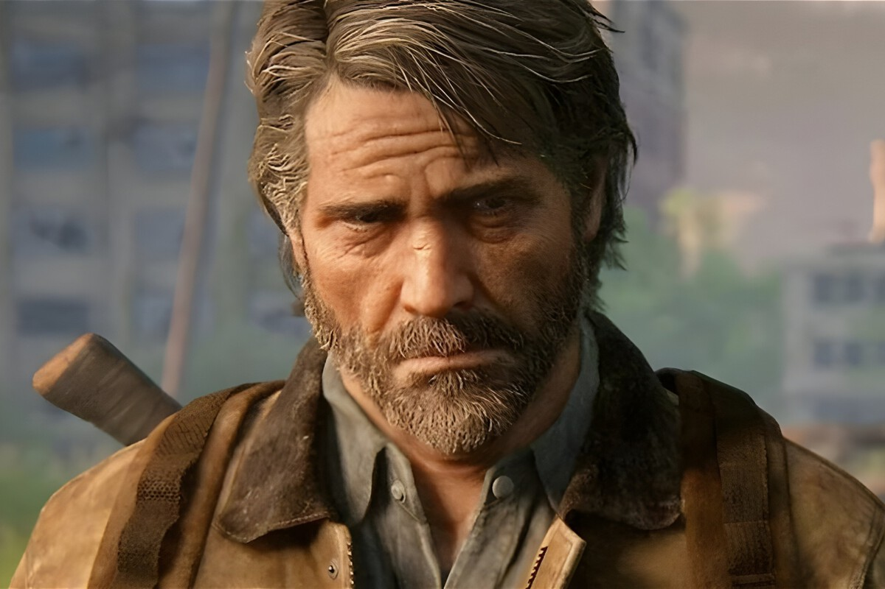

A medio camino entre traumática y gratuita, así es la secuencia eliminada de Joel en The Last of Us Parte 2 que solo podemos ver en su remaster
Este detalle forma parte de los "niveles perdidos", tres secciones recortadas del juego final y que incluye la versión Remastered
The Last of Us Parte 2: Remastered llega esta tercera semana de enero. La reedición del impresionante juego de Naughty Dog de 2020 se estrena con mejoras visuales para apoyar el concepto de "remaster", pero también con los llamados "niveles perdidos", tres niveles descartados que nunca se incluyeron en el juego original y que al menos uno de ellos nos privó de una nueva aparición de Joel en el juego. A partir de aquí, hay SPOILERS de la trama de The Last of Us: Parte 2, así como del contenido de uno de los niveles descartados. Si jugaste la secuela de una de las muchas obras maestras del equipo californiano, sabrás que la narración de The Last of Us: Parte 2 es fragmentada. Sigue un orden central, pero se intercala con eventos pasados que nos muestran a personajes como Joel, ya fallecido después del primer segmento de la historia, o incluso a la propia Ellie más joven entre la primera y segunda parte de la saga. Al tener la oportunidad de jugar al Remastered antes de su lanzamiento, podemos decir que, aunque los tres niveles son una adición interesante, algunos son más pulidos o necesarios, en el contexto de la historia, que otros. En este escenario, uno de los niveles sitúa a Ellie en las alcantarillas de Seattle en una sección de puzles semi-oscura donde, tras reptar por un espacio angosto, la linterna se apaga momentáneamente. La protagonista, tras un segundo sin luz enciende la linterna y tiene una alucinación con Joel muerto frente a ella en una escena de terror que recuerda a juegos como Dead Space por el clásico enfoque de jumpscare en una sección algo más "apacible" de la aventura. Un escenario de terror que el equipo californiano usó como conductor de una secuencia que, en realidad, podríamos considerar a medio camino entre gratuita y dramática. En este caso, el equipo de Naughty Dog explora el trauma de la protagonista y profundiza en uno de los temas del juego, la pérdida, a través de un nuevo vistazo de Joel en la aventura semanas después de su muerte. Sin embargo, es comprensible que este nivel no estuviera en el juego original (recordemos que esto sirve como Director's Cut) para evitar crear una sensación de terror y trauma gratuito en un segmento donde Ellie está cegada por la pura venganza. Además, los niveles vienen con algunas explicaciones de los desarrolladores en forma de "comentario del director", por lo que son una adición interesante para quienes quieran profundizar en el motivo de su ausencia.
¿Cuándo llegará The Last of Us Parte 2 a PC?
Con la llegada de The Last of Us Parte 2: Remastered el próximo 19 de enero, surge la pregunta: ¿cuándo llegará The Last of Us Parte 2 a PC? La primera entrega llegó a PC a principios del año pasado y se convirtió fácilmente en uno de los juegos peor optimizados del año. Aunque no se ha confirmado una versión de PC de la secuela, se espera que siga los pasos de su predecesor y se lance en Steam y Epic Games Store poco después.